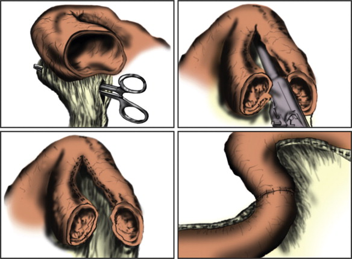
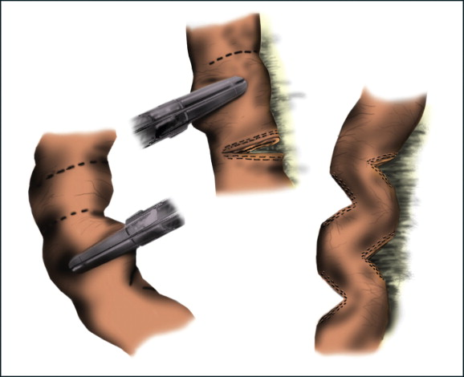

SHORT GUT SYNDROME
DEFINITION
A syndrome primarily characterised by diarrhoea, electrolyte
imbalance and malnutrition, typically after surgical resection of an
extensive portion of the intestine.
top D I A B M
I M home
INCIDENCE
Varies by aetiology.
Surgical resection is most common in neonates and elderly.
top D I A B M
I M home
AETIOLOGY
Massive surgical resection, e.g. following:
Congenital
Malrotation / malfixation of the midgut loop with volvulus.
Congenital atresia.
Hirschprung's Disease.
Intussusception.
Inflammatory
Necrotising colitis (in preterm babies).
IBD.
Tumours
Multiple tumours, e.g. adenocarcinoma, carcinoid
Degenerative / vascular
Arterial thrombosis / midgut infarction, embolism.
Mechanical
Strangulated herniae with massive infarction
Trauma
Abdo trauma.
Idiopathic
Iatrogenic radiation enterocolitis.
top D I A B M
I M home
BIOLOGICAL BEHAVIOUR
Physiology
How much bowel is enough?
Can go down to 75cm, assuming intact pylorus and ileocaecal valve.
If no colon, need 150cm for independence from TPN.
Pts with e.g. crohn's require a greater length of bowel
Pathophysiology
Depends on site and extent resected.
May affect any small-bowel function:
Proximal bowel
If a significant amount resected (~50-100 cm), transit time
decreases and malabsorption pertinent.
Electrolytes & water follow diarrhoea.
Protein, minerals, CHO, fat absorption.
Terminal Ileum
Bile salt losses.
Fat absorption deficit.
B12 deficit (intrinsic factor resorption).
Fat soluble vitamins absorption deficit (DEKA).
Role of Colon
Recruitment of bypassed colon has advantages and disadvantages
Better fluid, electrolyte and some nutrient absorption
But in context of
ileal loss, bile acid diarrhoea may increase output causing perianal
excoration.
- (may be beneficial to move to an end sigmoidoscopy when reversing
ileostomy in anticipated cases of severe ileum loss so as to prevent
this)
Complications
Gastric hypersecretion.
Renal calculi.
- due to hyperoxaluria due to increased oxalate absorption
- fatty acids increased in lumen, so bind Ca2+, stopping it from
binding to oxalate and forming insoluble calcium oxalate to be
secreted.
Gallstones (cholesterol and bile salt production increase).
Adaptation
Remaining bowel undergoes morphologic and physiologic changes
- villous hypertrophy and hyperplasia
--> increased surface area.
This reduces loss of fluids and electrolytes after a resection.
Also increased efficiency of absorption by increased number and
density of amino acids and glucose transporters
However, adaptive absorption of more nutrient lags
- depends on location of remaining bowel, feeding enterally and
patient's own degree of volitional intake
Mediated by gut hormone signals
- hence focus on hormonal therapies to speed up adaptation.
top D I A B M
I M home
MANIFESTATIONS
Symptoms
Local
Diarrhoea (transit time).
Steatorrhoea (fat malabsorption).
Cholerrhic diarrhoea (bile salts stimulate Na and H20 secretion).
Systemic
Growth retardation in children.
Weight loss (malabsorption).
Accompanying nutrition deficit.
Specific losses
Features of anaemia with symptoms.
Features of electrolyte imbalances (Ca2+, Na+, K+, Mg2+).
Including tetany, cramps, paraesthesia, osteoporosis / bone pain.
Vitaminosis D, E, K, A and symptoms.
Eg vision issues, osteomalacia.
Possibly oedema / clotting issues (protein losses).
Complications
Peptic ulcer & symptoms.
Renal stones & symptoms.
Gallstones & symptoms.
Signs
As appropriate to cause.
Malabsorption.
Weight, pallor, bones, etc.
Others as relevant to complications.
top D I A B M
I M home
INVESTIGATIONS
Bloods
FBC.
Biochemistry
Electrolytes.
Vitamin levels.
Protein (albumin, clotting time).
Imaging
Eg for complications.
top D I A B M
I M home
MANAGEMENT
Principles
Maximize function of remaining bowel
If that cannot be achieved, efforts to avoid TPN complications and
to augment enteral feeding.
Management Strategies
1.
Acute phase
a. Treat
postoperative complications
b. Maintain
full support via the parenteral route
c. Initiate
low-rate trophic enteral feeds
d. Document
amount and site of remaining bowel and underlying disease
2. Early adaptation (up to 1 year
postsurgery)
a. Increase
enteral nutrition to tolerance; supplement with glutamine
b. Achieve
permanent parenteral access, if indicated
c. Maximize
antiperistaltic agents
d.
Octreotide for high output ostomy or fistula
e. Dietary
counseling
f.
Clinical trials of trophic growth factors
3. Long-term adaptation (>1 year
postsurgery)
a. Recruit
bypassed bowel
b.
Bowel-lengthening procedure (Bianchi or STEP)
c. Monitor
for development of TPN-associated complications, and refer for
transplant prior to recurrent sepsis, thrombosis, or end-stage liver
disease
1. Avoid Dehydration and Reduce
Diarrhoea
Avoid Na and water depletion.
- may occur from diarrhoea, stomas, as well as third spacing
Measure all ostomy outputs and judicious parenteral fluid
supplementation.
Avoid hyperosmolar foods, lactose, high fat diet.
2. Optimize Nutritiona
Close involvement of dietician
Ensure nutrient support for deficiencies.
TPN may be necessary.
- but even small amounts of enteral
feeding are crucial for accelerating adaption and reducing
septic complications from translocation
- use only percutaneous subclavian lines for TPN (sepsis);
preferable to int jugular as difficulty in maintaining dressings
next to tracheostomy sites.
Trial enteral feeding at 10ml/hr initially, increasing by 5-10ml/hr
each day as tolerated.
- monitor stomal / diarrhoea losses and watch for metabolic
acidosis.
3. TPN Administration
1.5 g protein / kg / day
30 kcal / kg / day
Patients may become hyperglycaemic due to sepsis or surgical stress
--> mixed fuel substrate with reduced dextrose (15%) and
25% of calories as fat; and insulin infusions may be needed
4. Anti-motility agents
Ie loperamide, codeine, phenoxylate.
Ocreotide may reduce fluid and electrolyte losses
- but inhibits trophic
hormones, slows adaptation, and associated with hyperglycaemia
- still useful for controlling fluid and electrolyte losses,
especially when stoma is poorly fitting
- short term then move to once-monthly depot prep.
5. Once acute phase is over,
increase oral feeding
Appropriate diet depends.
Oral rehydration solutions are higher in electrolytes, encouraged to
maintain euvolemia.
- though if colon present, that helps fluid and electrolyte
absorption, soluble fibre supplementation creates short-chain fatty
acids and provides additional calories.
Diets are high in protein (30% calories), limited in fat, and are
40% complex carbohydrates.
- patients with massive ileal resections should receive medium chain
fatty acids
6. Glutamine
A conditionally essential amino acid, primary fuel of enterocytes
and supports GI immune function.
Conventional TPN does not contain glutamine.
Supplementation either IV or orally
Improved nutrient uptake and reduced TPN dependence if combine oral
glutamine, parenteral growth hormone, and specialized diet.
Oral dose is 0.5 mg/kg/day
7. Gastrin
Patients become hypersecretary with elevated gastrin.
- can reduce with H2 antagonists or PPIs
But permissive hypergastrinaemia is a tropic gut signal
8. Treat any Overgrowth
Pts with strictures or defuntionalized segments may have bacterial
overgrowth, leading to diarrhoea and further fluid and electrolyte
loss
Rotate nonabsorbable antibiotics (e.g. tetracyclines) may help
symptoms but not necessarily absorption.
9. Role of hormone augmentation
a) Human Growth Hormone
Anabolic protein that initiates cell division and regulates nutrient
metabolism
- with stimulation of protein synthesis and gluconeogensis
Anterior pituitary gland hormone
- effect mediated through IGF1
Approved by FDA for use in short gut syndrome but only in a
comprehensive program of intestinal rehabilitation
- associated with fluid retention, joint pain and hyperglycaemia.
b) Epidermal Growth
Factor (EGF)
Peptide from saliva and pancreas that bathes the GI tract.
Overexpression leads to massive villous hypertrophy and hyperplasia
Promising but not yet available commercially, investigational.
c) Glucagon-like Peptide 2
Most tropic hormone; released from 'L cells' in ileum and colon.
Structural adaptation of small bowel and upregulation of jejunal
nutrient transport
Improves intestinal absorption of energy, weight and nitrogen.
Also slows gastric emptying.
Long-acting version teduglutinate in phase III trials.
Promising
Surgical
Considerations
1. At baseline operation
Document clearly length and location of residual gut
Biopsy liver if suspect as a baseline prior to TPN
Prophylactic cholecystectomy is appropriate
2. Nipple valves, reversed
segments, colonic interpositions?
Theoretic advantage of slow motility outweighed by complications
(mainly obstructions)
Not advised.
3. Bowel dilation...
As bowel adapts, it also dilates
- does not necessarily improve absorption, but can be surgically
used to achieve length.
Bianchi procedure

Mesentery divided in two
Split longitudinally and reanastomosed
Good results in expert hands but damage to mesenteric vessels can
make the problem worse
So not done often
Serial Transverse Enteroplasty
Procedure (STEP)
Bowel plicated intact at mesenteric and antimesenteric edges

2cm gaps, consistent with normal bowel calibre; can double bowel
length.
TPN wean rate 60%
Intestinal Transplant
Continues to develop
Good outcomes considering critically ill nature of patients
subjected
- 1yr survival 80%; 3yr survival 50%
In patients with progressive TPN liver disease, can combine with a
liver transplant
Main challenge is identifying patients who fail to adapt (often with
ultra-short gut <60cm) and likely to get TPN liver disease
- recurrent bouts of line sepsis and fungaemia are another
indication that TPN will fail.
Living relative donation is a developing option but technically
extremely difficult.
- optimal human leukocyte antigen matching.
top D I A B M
I M home